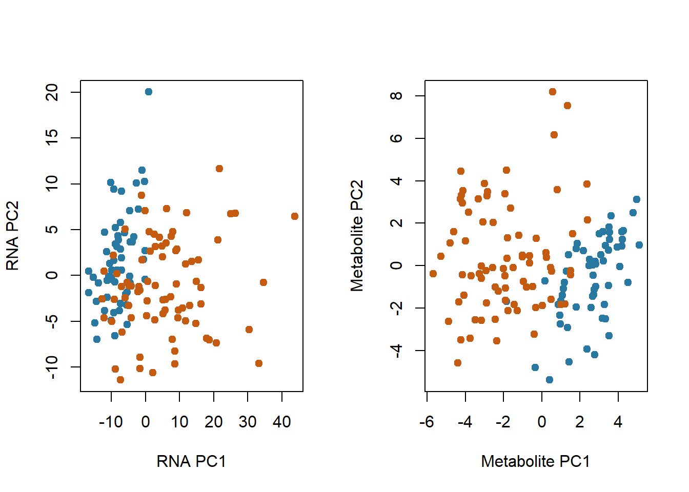
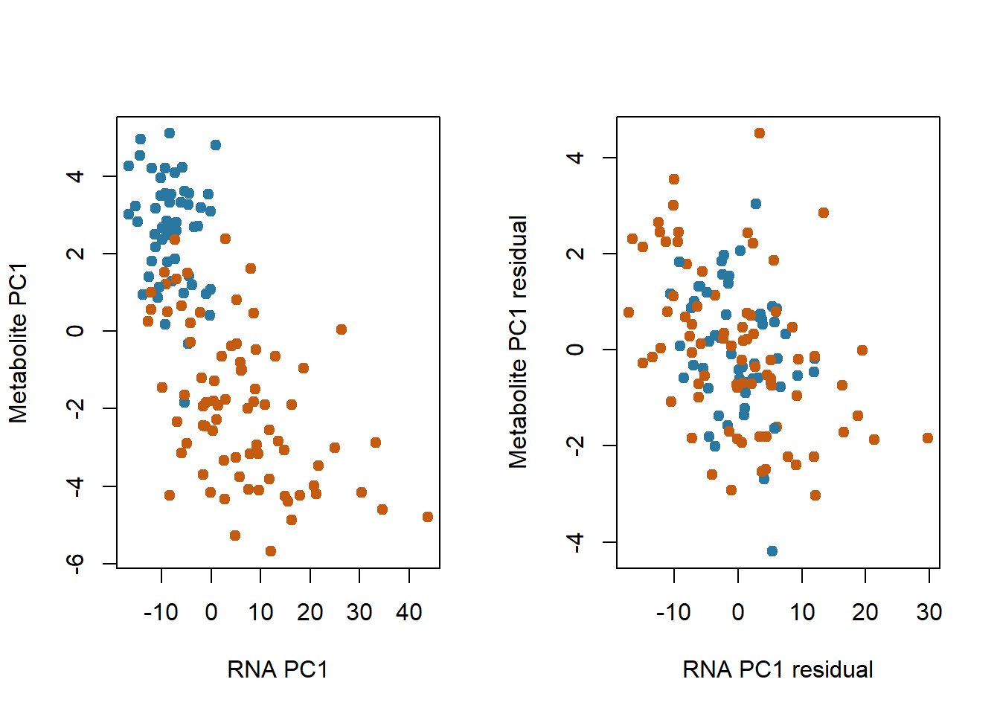
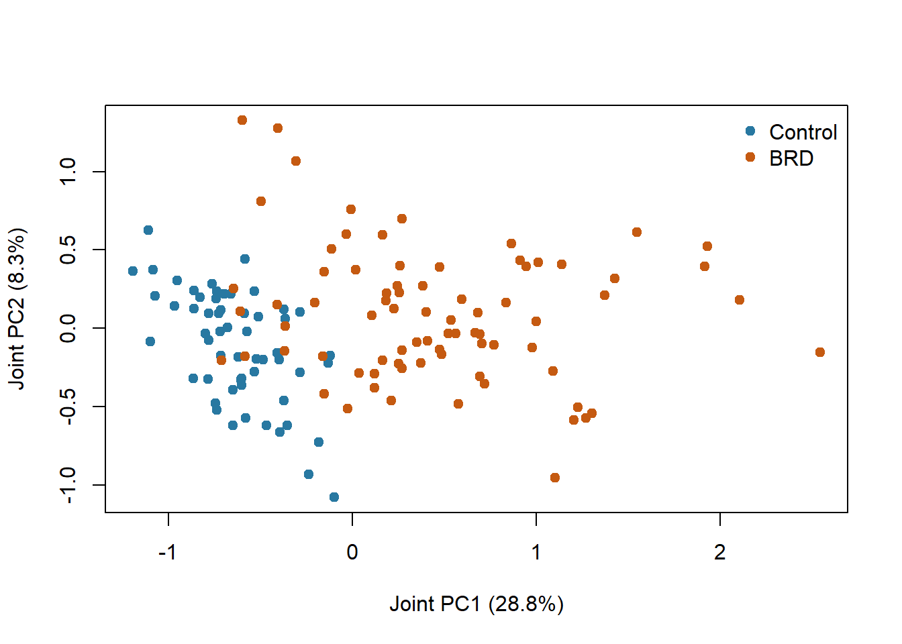
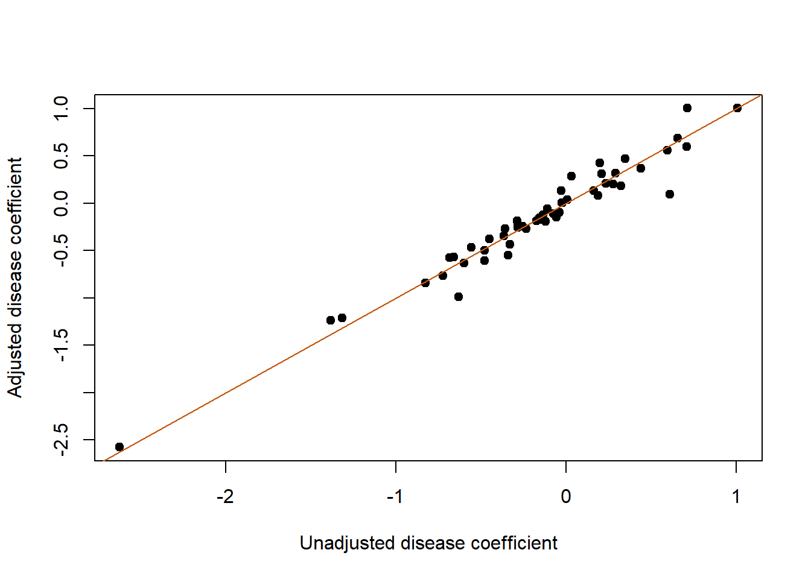
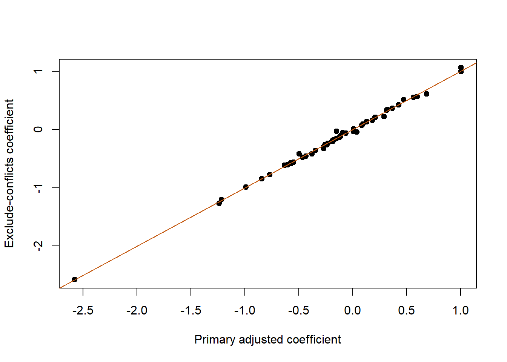

Show R code
helper_dir <- if (dir.exists("R")) "R" else "../R"
source(file.path(helper_dir, "case_helpers.R"))Case 3: Matched animal records, integration and confounding
How do concurrent blood RNA and plasma-metabolite measurements differ between cattle with and without bovine respiratory disease (BRD), and what happens to cross-layer relationships when shared disease status and recorded covariates are considered?
This real animal-production case emphasizes identity, confounding and interpretation. You will audit unmatched assays, normalize a compact RNA panel using full-library totals, examine separate and combined representations, and compare pooled with adjusted relationships. Allow 3–4 hours, after B02/B09/B12/B15 and P14, P19, P21. It uses base R plus knitr for displayed tables.
Li et al. (2022) investigated BRD in 143 crossbred feedlot cattle, including 80 cases and 63 controls. Controls were sampled from affected pens. Blood measurements were collected at the disease assessment, before the case animals’ subsequent treatment. This is observational disease-associated evidence; its measurements do not automatically identify pre-illness risk markers.
The local inputs derive from Borealis dataset version 1.0 and GEO GSE217317. They have unequal assay/metadata coverage. We use phenotype-table covariates and the intersection with metabolite and RNA observations; we do not invent missing metadata to reconstruct all 143 animals. The gene panel comprises the 300 highest mean-CPM genes across available RNA libraries, selected without disease labels. It is a compact exploratory panel, not a transcriptome-wide differential-expression screen.
The supplied phenotype and metabolite tables encode male animals differently (0 versus 2); this recoding is audited in preparation. GEO’s P4647 title is mapped to P4687 following the documented correction in the public preparation source. The source audit also finds four conflicting disease labels: U6623, U6450, U6325 and Y3551 are controls in the phenotype/metabolite tables and have _NB count titles, but their GEO characteristics say BRD. The primary analysis explicitly uses phenotype-table status; a sensitivity analysis below excludes these four animals. Agreement between tables is not proof that a label is correct, so resolution with the data producers would be needed before substantive deployment. All mappings, conflicting source labels and checksums are retained in the data notes.
Important design constraint: the public tables used here do not contain pen or matched-set identifiers. Adjusting for feedlot and other recorded variables cannot recover pen matching. Treat p-values below as exploratory under an independent-animal working model; they may overstate precision if residual within-pen dependence remains. Whole-blood cell composition and disease-related physiological changes can influence both layers.
meta <- case_read("cattle_samples.csv")
metabo <- case_read("cattle_metabolites.csv")
rna <- case_matrix(case_read("cattle_rna_panel.csv.gz"))
rna_meta <- case_read("cattle_rna_samples.csv")
identity_audit <- case_read("cattle_identity_audit.csv")
knitr::kable(identity_audit[identity_audit$status_conflict, ], row.names = FALSE)| source_title | sample_id | geo_status | phenotype_status | status_conflict | phenotype_available | metabolite_available |
|---|---|---|---|---|---|---|
| U6325_NB | U6325 | BRD | Control | TRUE | TRUE | TRUE |
| U6450_NB | U6450 | BRD | Control | TRUE | TRUE | TRUE |
| U6623_NB | U6623 | BRD | Control | TRUE | TRUE | TRUE |
| Y3551_NB | Y3551 | BRD | Control | TRUE | TRUE | TRUE |
stopifnot(!anyDuplicated(meta$sample_id), !anyDuplicated(metabo$sample_id),
!anyDuplicated(rna_meta$sample_id))
ids <- Reduce(intersect, list(meta$sample_id, metabo$sample_id, colnames(rna)))
audit <- data.frame(source = c("Phenotype metadata", "Metabolites", "RNA", "Matched intersection"),
animals = c(nrow(meta), nrow(metabo), ncol(rna), length(ids)))
knitr::kable(audit, row.names = FALSE)| source | animals |
|---|---|
| Phenotype metadata | 138 |
| Metabolites | 139 |
| RNA | 143 |
| Matched intersection | 135 |
$metadata_without_metabolites
[1] "Y3005" "P4687" "Y9816"
$rna_without_metadata
[1] "R9518" "R9909" "P4744" "P4772" "R8953" "U5416"
$metabolites_without_metadata
[1] "P4744" "P4772" "R8953" "U5416"This audit is a biological result of data availability. It changes the population represented by integration. A table of 143 RNA libraries does not imply 143 animals with every required covariate and assay.
meta <- meta[match(ids, meta$sample_id), ]
M <- case_matrix(metabo[match(ids, metabo$sample_id), ])
R <- t(rna[, ids, drop = FALSE])
library_total <- rna_meta$library_total[match(ids, rna_meta$sample_id)]
stopifnot(identical(rownames(R), meta$sample_id), identical(rownames(M), meta$sample_id),
!anyNA(library_total), all(library_total > 0))
meta$status <- factor(meta$status, levels = c("Control", "BRD"))
meta$feedlot <- factor(meta$feedlot)
meta$sex <- factor(meta$sex)
meta$rna_batch <- factor(meta$rna_batch)
knitr::kable(with(meta, table(feedlot, status)))| Control | BRD | |
|---|---|---|
| F1 | 10 | 12 |
| F2 | 23 | 35 |
| F3 | 9 | 9 |
| F4 | 15 | 22 |
| Control | BRD | |
|---|---|---|
| B1 | 20 | 25 |
| B2 | 37 | 53 |
| Control | BRD | |
|---|---|---|
| female | 20 | 35 |
| male | 37 | 43 |
Look for unbalanced covariates before interpreting assay separation. RNA-sequencing batch is specific to that assay; it is not evidence that plasma was processed in the same batch. A covariate may change an association without proving a causal role for the covariate.
| layer | features | missing | nonpositive |
|---|---|---|---|
| RNA panel | 300 | 0 | 0 |
| Metabolites | 55 | 588 | 91 |
stopifnot(!anyNA(R))
positive <- !is.na(M) & M > 0
feature_audit <- data.frame(feature = colnames(M), positive_observations = colSums(positive),
missing = colSums(is.na(M)),
nonpositive = colSums(M <= 0, na.rm = TRUE))
knitr::kable(feature_audit[feature_audit$positive_observations < nrow(M), ], row.names = FALSE)| feature | positive_observations | missing | nonpositive |
|---|---|---|---|
| HMDB00001 | 90 | 45 | 0 |
| HMDB00060 | 134 | 0 | 1 |
| HMDB00094 | 134 | 0 | 1 |
| HMDB00157 | 33 | 45 | 57 |
| HMDB00167 | 134 | 0 | 1 |
| HMDB00177 | 90 | 45 | 0 |
| HMDB00187 | 133 | 2 | 0 |
| HMDB00191 | 90 | 45 | 0 |
| HMDB00214 | 90 | 45 | 0 |
| HMDB00254 | 90 | 45 | 0 |
| HMDB00271 | 90 | 45 | 0 |
| HMDB00294 | 90 | 45 | 0 |
| HMDB00407 | 89 | 45 | 1 |
| HMDB00452 | 85 | 45 | 5 |
| HMDB00491 | 90 | 45 | 0 |
| HMDB00517 | 86 | 45 | 4 |
| HMDB00695 | 90 | 45 | 0 |
| HMDB00754 | 115 | 0 | 20 |
| HMDB01881 | 133 | 1 | 1 |
# Preserve all 135 matched animals; limit PCA to complete positive features.
complete_feature <- colSums(positive) == nrow(M)
logR <- log2(sweep(R, 1, library_total / 1e6, "/") + 1)
logM_all <- M
logM_all[!positive] <- NA_real_
logM_all <- log2(logM_all)
logM <- logM_all[, complete_feature, drop = FALSE]
data.frame(supplied_metabolites = ncol(M), complete_positive_for_PCA = ncol(logM)) supplied_metabolites complete_positive_for_PCA
1 55 36RNA is converted to CPM using the full-gene library totals, not the sum of the selected 300 genes. +1 stabilizes the exploratory log display and is not a count-model offset. For exploratory PCA, we retain the 36 metabolite features with positive measurements in all 135 matched animals and log-transform them. The original extract has 55 HMDB-labelled columns (the publication describes 54 metabolites); we preserve the supplied columns rather than silently reconcile this discrepancy. Missing and zero values in the other 19 columns remain visible in the audit. A zero is not replaced by an invented small concentration: it is excluded from logarithmic observed-value analysis. This complete-feature display favors consistently quantified features and is not representative of the entire metabolome. HMDB identifiers retain the source’s feature names; this lesson does not revalidate spectral assignments or infer a concentration unit absent from the extract’s column labels. State the supplied scale, and consult the study’s quantification protocol before translating a coefficient into absolute units.
For exploration we standardize features within each layer. This makes unit variance features comparable but can give a noisy low-abundance feature as much initial weight as a precise feature. Selection and scaling here describe the available dataset; they must be fitted in training folds if a later task estimates predictive performance.
stopifnot(all(apply(logR, 2, sd) > 0), all(apply(logM, 2, sd) > 0))
ZR <- scale(logR); ZM <- scale(logM)
pcR <- prcomp(ZR, center = FALSE, scale. = FALSE)
pcM <- prcomp(ZM, center = FALSE, scale. = FALSE)
color <- c(Control = "#2878a1", BRD = "#c55a11")[as.character(meta$status)]
oldpar <- par(mfrow = c(1, 2))
plot(pcR$x[, 1:2], col = color, pch = 19, xlab = "RNA PC1", ylab = "RNA PC2")
plot(pcM$x[, 1:2], col = color, pch = 19, xlab = "Metabolite PC1", ylab = "Metabolite PC2")
Color the same plots by feedlot and RNA batch as an exercise. Group separation in PCA can motivate analysis but does not tell you whether disease, breed composition, technical variation or cell composition drives it.
Use the first principal component of each block as a compact descriptive representation. PC signs are arbitrary; interpret association strength and the loadings, not the sign as a universal biological direction.
covariates <- model.matrix(~ status + feedlot + sex + rna_batch + day_on_feed +
breed1 + breed2 + breed3, meta)
stopifnot(nrow(covariates) == nrow(meta), qr(covariates)$rank == ncol(covariates))
rna_pc1 <- pcR$x[, 1]; met_pc1 <- pcM$x[, 1]
rna_resid <- lm.fit(covariates, rna_pc1)$residuals
met_resid <- lm.fit(covariates, met_pc1)$residuals
data.frame(comparison = c("Pooled PC1 correlation", "Recorded-covariate adjusted"),
correlation = c(cor(rna_pc1, met_pc1), cor(rna_resid, met_resid))) comparison correlation
1 Pooled PC1 correlation -0.6889209
2 Recorded-covariate adjusted -0.3888399
A pooled relationship can partly reflect a shared disease-group difference. Residualization asks about variation not linearly explained by the recorded covariates, including disease status. It changes the question; it does not prove that a biological relationship has disappeared or that the adjusted result is causal. This demonstration includes RNA batch in the common adjustment to compare the same conditional observations; do not assume it is a metabolomics processing variable. Unrecorded pen and cell-composition effects remain.
Simply concatenating 300 standardized RNA genes with 36 complete metabolite features gives the RNA block greater total initial variance. Here each block is divided by the square root of its number of features so its average feature variance has comparable block weight.
joint <- cbind(ZR / sqrt(ncol(ZR)), ZM / sqrt(ncol(ZM)))
pj <- prcomp(joint, center = FALSE, scale. = FALSE)
frac <- 100 * pj$sdev^2 / sum(pj$sdev^2)
plot(pj$x[, 1:2], col = color, pch = 19,
xlab = sprintf("Joint PC1 (%.1f%%)", frac[1]),
ylab = sprintf("Joint PC2 (%.1f%%)", frac[2]))
legend("topright", c("Control", "BRD"), col = c("#2878a1", "#c55a11"), pch = 19, bty = "n")
Equal total block variance is a transparent weighting choice, not a claim of equal biological information or measurement quality. Compare with an unweighted concatenation and explain which layer drives the first component. This is an exploratory integration display; it is not an evaluated diagnostic or prospective prediction model.
For each metabolite, compare a disease-only model with a model including recorded feedlot, sex, days on feed and three breed-composition covariates. We omit RNA batch from this assay-specific model. Both start with the same matched cohort and use the same positive observed animals within each feature. The eligible sample count can therefore differ across metabolites. Require at least 20 observed animals in each disease group for this teaching comparison, and report those counts. The disease coefficient is a difference in expected log2 supplied metabolite measurement, not proof of a disease-causing metabolic process.
association <- function(values, adjusted = FALSE, exclude_conflicts = FALSE) {
observed <- !is.na(values)
if (exclude_conflicts) observed <- observed &
!(meta$sample_id %in% identity_audit$sample_id[identity_audit$status_conflict])
d <- meta[observed, ]; d$value <- values[observed]
sizes <- table(d$status)
empty <- c(effect = NA_real_, se = NA_real_, p = NA_real_, n = nrow(d),
controls = unname(sizes["Control"]), cases = unname(sizes["BRD"]))
if (any(sizes < 20)) return(empty)
model <- if (adjusted) value ~ status + feedlot + sex + day_on_feed + breed1 + breed2 + breed3
else value ~ status
X <- model.matrix(model, d)
if (qr(X)$rank < ncol(X)) return(empty)
cf <- coef(summary(lm(model, data = d)))["statusBRD", ]
c(effect = unname(cf[1]), se = unname(cf[2]), p = unname(cf[4]),
n = nrow(d), controls = unname(sizes["Control"]), cases = unname(sizes["BRD"]))
}
raw_assoc <- t(apply(logM_all, 2, association))
adj_assoc <- t(apply(logM_all, 2, association, adjusted = TRUE))
at <- data.frame(feature = colnames(logM_all),
observed_n = adj_assoc[, "n"], controls = adj_assoc[, "controls"], cases = adj_assoc[, "cases"],
unadjusted_effect = raw_assoc[, "effect"], adjusted_effect = adj_assoc[, "effect"],
adjusted_se = adj_assoc[, "se"], adjusted_p = adj_assoc[, "p"],
adjusted_fdr = p.adjust(adj_assoc[, "p"], "BH"))
at <- at[order(at$adjusted_fdr), ]
knitr::kable(head(at, 10), digits = 3, row.names = FALSE)| feature | observed_n | controls | cases | unadjusted_effect | adjusted_effect | adjusted_se | adjusted_p | adjusted_fdr |
|---|---|---|---|---|---|---|---|---|
| HMDB00094 | 134 | 57 | 77 | -2.627 | -2.576 | 0.140 | 0 | 0 |
| HMDB00042 | 135 | 57 | 78 | -1.384 | -1.238 | 0.121 | 0 | 0 |
| HMDB00169 | 135 | 57 | 78 | 1.008 | 1.002 | 0.099 | 0 | 0 |
| HMDB01873 | 135 | 57 | 78 | -0.686 | -0.572 | 0.063 | 0 | 0 |
| HMDB00148 | 135 | 57 | 78 | -0.826 | -0.841 | 0.105 | 0 | 0 |
| HMDB00159 | 135 | 57 | 78 | 0.597 | 0.563 | 0.072 | 0 | 0 |
| HMDB00357 | 135 | 57 | 78 | -1.318 | -1.214 | 0.158 | 0 | 0 |
| HMDB00641 | 135 | 57 | 78 | -0.659 | -0.570 | 0.079 | 0 | 0 |
| HMDB00043 | 135 | 57 | 78 | -0.724 | -0.768 | 0.116 | 0 | 0 |
| HMDB00158 | 135 | 57 | 78 | -0.556 | -0.465 | 0.070 | 0 | 0 |
Disease-only versus recorded-covariate-adjusted log2 metabolite associations. Each feature uses its eligible positive observed animals; the diagonal marks equality.

These working-model tests adjust multiplicity across the 55 supplied columns, conservatively retaining that family size even if a feature is ineligible (its result remains NA). The group-wise observation rule and rank check can leave a column untested. Observed-value analysis does not solve informative missingness, so compare missingness by disease group before interpreting its coefficient. They do not address unobserved pen dependence or selection into a case-control sample. They need not reproduce the paper’s analysis, which used different feature processing, covariate handling and assay-specific samples. The goal is to inspect how choices change evidence, not tune the pipeline until published discovery counts reappear.
Keep the primary feature definitions and model, but remove the four disputed control records. This comparison describes sensitivity to a plausible source-data problem; it does not establish which original label is correct.
no_conflict <- t(apply(logM_all, 2, association, adjusted = TRUE, exclude_conflicts = TRUE))
ok <- is.finite(adj_assoc[, "effect"]) & is.finite(no_conflict[, "effect"])
data.frame(primary_cohort = nrow(meta),
sensitivity_cohort = sum(!(meta$sample_id %in%
identity_audit$sample_id[identity_audit$status_conflict])),
comparable_features = sum(ok),
median_absolute_effect_change = median(abs(adj_assoc[ok, "effect"] -
no_conflict[ok, "effect"]))) primary_cohort sensitivity_cohort comparable_features
1 135 131 54
median_absolute_effect_change
1 0.01229677
Inspect both large and small changes. Even stable coefficients do not make unresolved source labels acceptable for a deployed diagnostic. A proper data-query log would record the discrepancy, the working decision and the response from the data owner.
Only animals with all selected assay and phenotype records enter this integration; unavailable observations must not be filled from an assumed group average. Disease-only residualization removes the pooled group mean difference, while the larger adjustment also removes variation explained by recorded covariates. Neither identifies a causal chain. Block weighting changes the representation because integration is a modelling choice. Covariate timing and a causal diagram help distinguish confounders from possible consequences. A prospective marker study collects measurements before onset, records allocation/nesting and validates on new animals or farms appropriate to deployment.
Follow the Case 3 assignment. Include identity and conflicting-label audits, cohort counts, measurement scales, panel selection, covariate balance, primary/sensitivity methods and the unavailable pen identifiers. Do not claim a causal mechanism, genome-wide screen or validated pre-illness predictor from this case.
Return to the case index, or develop the synthesis assignment.